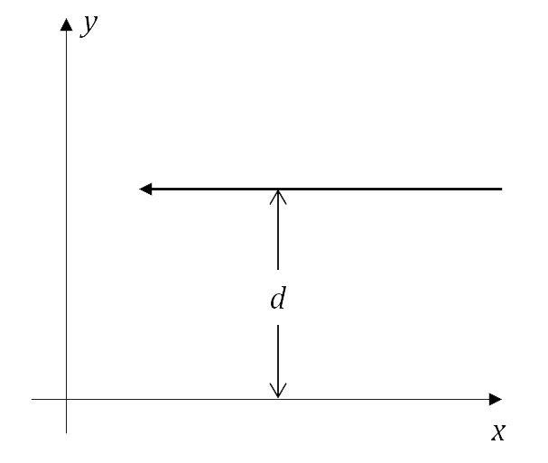

Órbitas de corpos massivos
Caso newtoniano
De acordo com a lei da gravitação universal de Newton, o campo gravitacional externo a um corpo esférico de massa $M$ (situado na origem do sistema de coordenadas) é $$ \vec{g} = - \frac{GM}{r^2} \hat{r} \qquad \qquad $$ onde $G = 6,67 • 10^{-11} m^3 kg^{-1} s^{-2}$ é a constante da gravitação universal e $r$ é a distância ao corpo central.
Uma partícula de massa $m$ sujeita a esse campo gravitacional descreve uma trajetória que é restrita a um plano e pode ser descrita pelas fuções $r(t)$ e $θ(t)$, que satisfazem $$ \frac{m}{2} \left(\frac{dr}{dt}\right)^2 + U_{efetiva} = E \qquad \qquad $$ e $$ \frac{d\theta}{dt} = \frac{L}{mr^2} \qquad \qquad $$
Aqui, $L$ é o módulo do momento angular, $E$ é a energia total e a energia potencial efetiva $U_{efetiva}$ é dada por $$ U_{efetiva} = -\frac{GMm}{r} + \frac{L^2}{2 m r^2} \qquad \qquad $$
Caso Relativístico
A relatividade geral é a teoria atual que melhor descreve os fenômenos gravitacionais. Nessa teoria, a gravitação é descrita como resultado da curvatura do espaço-tempo. Uma das soluções mais simples, descrevendo a geometria do espaço-tempo externa a um corpo esférico, estático, de massa $M$ é a chamada solução de Schwarzschild. Partículas que orbitam o corpo central seguem trajetórias que também podem ser descritas pela equação (2), mas com a nova energia potencial efetiva: $$ U_{efetiva}^{(R)} = - \frac{GMm}{r} + \frac{L^2}{2 m r^2} - \frac{GML^2}{m c^2 r^3} \qquad \qquad $$
Órbitas de raios de luz
Um raio de luz, no espaço-tempo de Schwarzschild, descreve uma trajetória que também pode ser escrita na forma de um problema unidimensional efetivo. Temos: $$ \frac{1}{\ell^2} \left(\frac{dr}{d\lambda}\right)^2 + V_{efetivo} = \frac{1}{d^2} \qquad \qquad $$ com o potencial efetivo $$ V_{efetivo} = \frac{1}{r^2} \left( 1 - \frac{r_g}{r} \right) \qquad \qquad $$
Aqui, $r_g = 2GM/c^2$ depende da massa do corpo central.
Nesse caso, o que cumpre o papel do parâmetro de 'energia' é o fator $1/d^2$, onde $d$ é o parâmetro de impacto do fóton, que pode ser obtido a partir da sua energia $e$ e momento angular $\ell$ como $d = c |\ell/e|$. Para entender o que d representa, considere um raio de luz que vem do infinito, se movendo paralelamente ao eixo $x$: o parâmetro de impacto $d$ é justamente a distância ao eixo-$x$, como mostra a figura abaixo.
Próximos passos
Este simulador se destina ao estudo de órbitas relativísticas. Nele você pode simular o potencial efetivo e esboço de órbitas de corpos massivos e/ou raios de luz. Basta ir ao menu na parte superior desta página e escolher a partícula a ser analisada. Bom estudo!